i2b2 Web Client Help
The Find Terms view is designed to allow users to search for concepts. Users can search by the name or by a particular code. Once the appropriate concept is found it can be used in many of the i2b2 views and plug-ins, such as the Query Tool view.
This section describes the layout and contents of this view.
The Find Terms view allows users to search for a concept or group of concepts. There are basically two methods of searching available;(1) by name and (2) by code.
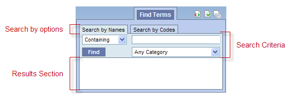
 Regardless of how you search for the concept the layout of both tabs is the same.
Regardless of how you search for the concept the layout of both tabs is the same.
This section has two tabs; one is to Search by Name and the other Search by Code. Depending on which tab is active will determine which search method is used to find the concept.
There are three fields in this section; (1) Qualifier, (2) Text and (3) Category
The qualifier is used to tell the system whether or not you are lookng for an exact match or just a partial match. There are four different options to choose from.
The text box is where you will enter what you are searching for.
The category / coding system selection field allows you to narrow down the search to a particular table or set of codes.
The results section displays the concepts that were found based on the search criteria.
The clinical vocabulary that resindes in teh Ontology Management Cell was partially built using terminology from several standard coding systems. These codes can be used to search for a particular term (see section on Search by Code). The following are some examples of standard coding systems.
Example:
Code: 414.9
Description: Chronic Ischemic Heart Disease, unspecified
Example:
Code: 13969-1
Description: CPK-MB
Example:
Code: 12783-*178-87
Description: Briston-Myers Squibb, Pravachol, 20 mg tablets
Example:
Code: C0001403
Description: Addison's Disease
Depending on the search criteria, the results section may display groups of concepts which are contained in folders as well as individual concepts. The folders can be expanded to see the listing of concepts in that grouping by clicking on the plus sign ( ) or negative sign () next to the folder icon.
) or negative sign () next to the folder icon.
) next to the folder in the results section of Find Terms view.
Users can define how many concepts to display and whether or not to show hidden terms and/or synonyms. The display options are set in the Find Terms Options dialog window, which can be accessed by clicking on the Show Options button ( ).
).

The Maximum number of children to display is used when retrieving the search results to be displayed in the results section of the Find Terms view. Once the maximum number is reaced a message will appear informing you that the query has reached the maximum number of terms and suggests you try searching again with a more specific query. Running a search with a more specific query will narrow your results as the selection criteria will not be as broadly defined.
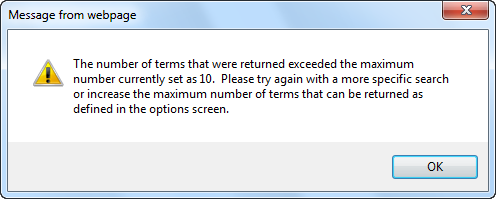
In the metadata table, an attribute is set to determine whether or not a concept is active, inactive or hidden. If a concept is marked as hidden it will not appear in the list of terms. Selecting Show Hiddens will display those concepts marked to be hidden. For easy identification, hidden terms will be red when displayed in the results list.
Some concepts may be flagged in the metadata table as a synonym of another concept. Selecting Show Synonyms will display both the original concept and the synonym in the Find Terms View. For easy identification, Synonym terms will be blue when displayed in the results list.
This section describes how to search for a term using one of the two available methods; (1) Search by Name and (2) Search by Code.
Regardless of whether you are searching by name or by code, the first step in entering the search criteria is defining a qualifier. The first field is the “qualifier” and it is a drop-down list with four options:
The results returned will contain only those concepts whose name or code begins with the text entered in the search box.
The results returned will contain only those concepts whose name or code ends with the text entered in the search box.
The results returned will be those concepts whose name or code ends with the text entered in the search box.
 This search will return the broadest range of results.
This search will return the broadest range of results.
 This search will return the narrowest range of results.
This search will return the narrowest range of results.
>The method of searching by the name is exactly what it sounds like; you can search for a concept by its name.
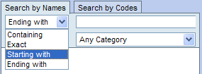
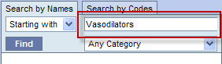
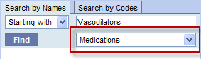


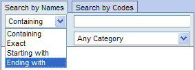
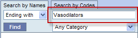
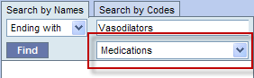
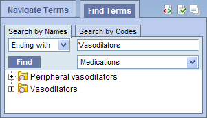
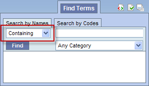
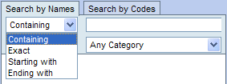
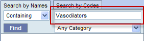
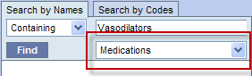
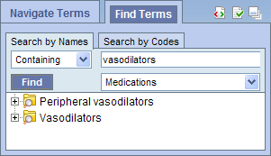

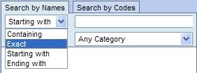
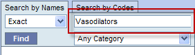
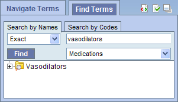
Some of the concepts have a standard code associated with them. This code can be used to search for a specific concept or a grouping of concepts.
 Although the steps below are for searching by LOINC code, they can be used for searching by any type of code. In step 4, replace LOINC with the coding system you will be using.
Although the steps below are for searching by LOINC code, they can be used for searching by any type of code. In step 4, replace LOINC with the coding system you will be using.
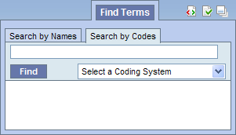
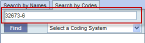
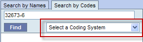
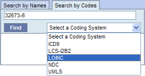
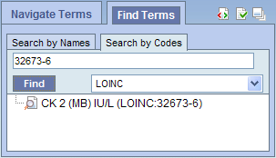
This section describes how to use a concept or group of concepts.
Individual as well as groups of concepts can be dragged and dropped (copied) from the Navigate Terms View to other views in the i2b2 Web Client.
A folder ( ) and all its concepts (children) can be added to other views by dragging the folder name from Find Terms to one of the following views.
) and all its concepts (children) can be added to other views by dragging the folder name from Find Terms to one of the following views.
A concept () can be added to other views by dragging the name of the concept from Find Terms to one of the following views.
A folder or individual concept can be added to the query tool view by simply dragging the item from Find Terms view and dropping it into one of the panels in the Query Tool view.


Information in the workplace is related to the most common concepts and queries that an individual uses and in essence becomes their personal workplace.